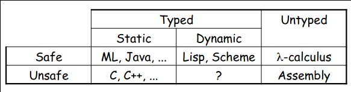

Type Systems
Introduction
- Fundamental purpose of a type system is to prevent execution errors during runtime
- The absence of execution errors is a nontrivial property
- Informal descriptions of type systems are imprecise and lead to ambiguities
- There are different compilers for the same language that implement slightly different type systems
- Many languages have been found to be type unsound
- Program crashes although it was accepted by the type checker
Soundness vs Completeness (Reference)
- A type system is sound implies that all of type-checked programs are correct (in the other words, all of the incorrect program can’t be type checked), i.e. there won’t be any false negative
- For negative, we mean that the type checker claims that there is no error in the input program, i.e. the input program is correct
- A type system is complete implies that all of the correct program can be accepted by the type checker, i.e. there won’t be any false positive
- For positive, we mean that the type checker claims that there are some errors in the input program, i.e. the input program is incorrect
Types
- A type is a set of values which specifies the range of a variable
- Examples in Java:
intis the set of all integers between \(-2^{31}\) and \(2^{31}-1\)doubleis the set of all double-precision floating point numbersbooleanis the set \(\{ \texttt{true}, \texttt{false} \}\)Foois the set of all objects of classFooList<Integer>is the set of allListsofIntegerobjectsListis a type constructorListacts as a function from types to types
int -> intis the set of all functions taking anintas input and returning anotherint
- A type is an example of an abstract value
- Represents a set of concrete values
Typed and Untyped Languages
Typed Languages
- Every variable has a nontrivial type
- A type system keeps track of types
- Languages can be explicitly typed or implicitly typed
Untyped Languages
- Do not restrict the range of values for a given variable
- Either no types at all; or one universal type for all variables (e.g.
any) - Operations may be applied to inappropriate arguments
- The result may be a fixed arbitrary value, a fault, an exception or an unspecified result
- The pure \(\lambda\)-calculus is an extreme example of an untyped language where no fault ever occurs
- The only operation is function application and all values are functions; so that operation never fails
Execution Errors
- There are two kinds of execution errors
- A program is considered safe if it does not cause untrapped errors
- Languages in which all programs are safe are called safe languages
- For a given language designate a set of forbidden errors
- A superset of the untrapped errors
- Includes some trapped errors as well
Trapped Execution Errors
- Cause computation to stop immediately
- Well-specified behaviour
- Usually enforced by hardware
- Examples: division by zero, accessing illegal address
Untrapped Execution Errors
- Might go unnoticed for a while and have arbitrary behaviour is unspecified
- Examples: Accessing past the end of an array
Preventing Forbidden Errors
- Forbidden errors can be caught by a combination of static and runtime checking
- Certain errors can only be caught at runtime
Static Checking
- Errors are detected early, before the program runs
- Types provide necessary static information for static checking
- Detecting certain/most errors statically is not possible in most languages
Dynamic Checking
- Required when static checking is undecidable (e.g. array-bounds checking)
- Runtime encodings of types are still used
- Should be limited, since it delays finding errors
- Dynamically checked languages can still be strongly checked, even thought they do not have static checking or a type system
Safe Languages

- There are typed languages that are not safe (weakly typed languages)
- Only some unsafe operations are detected and not all
- C is unsafe by design because of performance considerations
- Ensuring safety has a cost, since some checks can only be done at runtime
Advantages of Typed Languages
Development
- Type checking catches errors early
- Reduced debugging time
- Type signatures serve as documentation and also enable separate compilation
Maintenance
- Types act as checked specifications
- Breaking changes to the code base can be catched
- Types can enforce abstractions
Execution
- Static checking reduces the need for dynamic checking
- Safe languages are easier to analyze statically, allowing for the compile to generate better code
Disadvantages of Typed Languages
- Static type checking imposes constraints on the programmer
- Some valid programs might be rejected
- Hard to step outside the language
- Dynamic safety checks can be costly
- Some applications are justified to use weakly-typed languages
Properties of Type Systems
Types are more precise than comments
Types are more easily mechanizable than program specifications
Expected properties:
- Types should be enforceable
- Type declarations should be checked statically as much as possible
- Types should be decidably verifiable
- There should be a typechecking algorithm that can ensure that a program is well-typed
- Typing rules should be transparent
- It should be easy to see why a program is not well-typed
- If it fails, the reason should be clear
Why Formal Type Systems?
- Many typed languages have informal descriptions of their type system (e.g. in language reference manuals)
- A fair amount of careful analysis is required to avoid false claims of type safety
- A formal presentation of a type system is a precise specification of the type checker
- And allows formal proofs of type safety
Formalizing a Type System
A multi-step process:
- Syntax
- For expressions, statements, … (express algorithmic behavior)
- For types (express static knowledge)
- Static semantics (typing rules)
- Define the typing judgment and its derivation rules
- Dynamic semantics (e.g. operational)
- Define the evaluation judgment and its derivation rules
- Type soundness
- Relates the static and dynamic semantics
- State and prove the soundness theorem
References
- Type Systems by Luca Cardelli
- Lecture slides from ECS 240 @ UCDavis
- Type Systems lecture by Mayur Naik